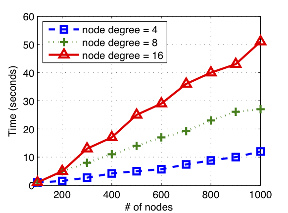
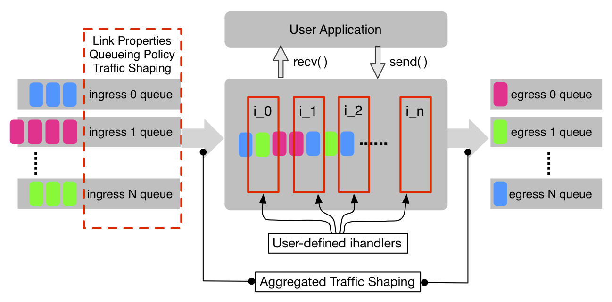
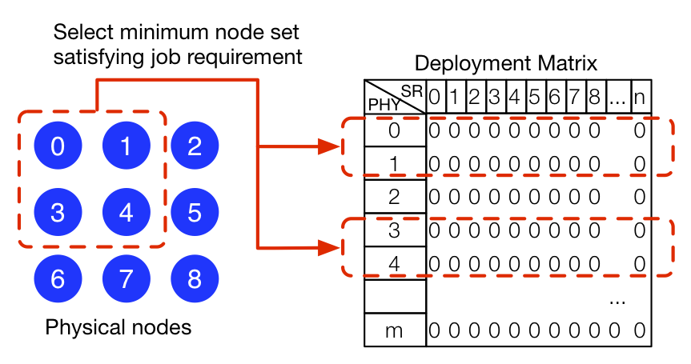

LiteLab is a light-weight platform specialized for large-scale networking experiments. It takes advantages of overlay network techniques and power of computing cluster, providing a flexible experiment platform with many uses. LiteLab helps researchers reduce the experiment complexity and speeds up experiment life-cycle, and at the same time, provides satisfying accuracy.
LiteLab can easily scale up the experiment to tens of thousands of nodes given any topology. Configuration and setup are simple.
The simulated router is highly customizable and extensible. Plugging in user-defined modules requires minimum overheads.
LiteLab utilizes and allocates the resources wisely based on the current load on the computing cluster.
Prof. Jussi Kangasharju, Professor, Department of Computer Science, University of Helsinki. Email:
Liang Wang, PhD. student, Department of Computer Science, University of Helsinki. Email: